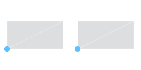
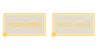
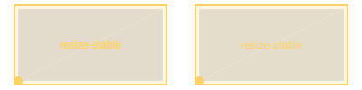
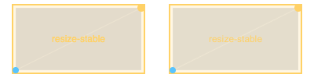
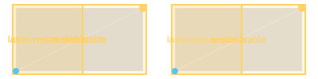

Mapping, visibility, linked views and publication · 14 October 2026
Bounded synthetic evidence; full parity remains unqualified. The 151-checkpoint matrix, cortical performance, and complete route admission are still pending. Strict pixel failures remain below.
Each plate: SurfViewJS / native Three.js / portable raster. All 16 fixed interior-color regions pass. Native full frames pass 15/16; mixed-gradient max error is 3 versus limit 2. Raster silhouette antialiasing differences fail the strict full-frame gate.
Browser comparison: SurfViewJS left / ScalaFIM Canvas right. All seven stages are pixel-identical. Uniform fill is the reference behavior; scalar-painted flat maps are outside this contract.
Same interactions pass. These strict pixel comparisons fail because of glyph rendering and color rounding; they are retained as failures. The lasso label overlap/clipping is shared with the reference.
plain · IoU 1.000000 · max channel error 8

hover · IoU 1.000000 · max channel error 16selected · IoU 1.000000 · max channel error 8

polygon-roi · IoU 1.000000 · max channel error 113

resized · IoU 1.000000 · max channel error 113

synced-time-selection · IoU 1.000000 · max channel error 113

lasso-roi · IoU 0.999935 · max channel error 255
Linked JVM host
ScalaFIM Three.js left / actual JavaFX raster host right, at the same time, morph, camera and selected vertex. Exact host publication, restore and real resize-back assertions pass. The strict cross-renderer pixel comparisons retain raster antialiasing failures.
Native JavaFX Scene3D admission remains unchanged. Raster-host output is not a native Scene3D pass. No cortical latency/memory qualification is claimed. Independent review, raw logs, prior failures, and source/artifact hashes accompany this gallery.